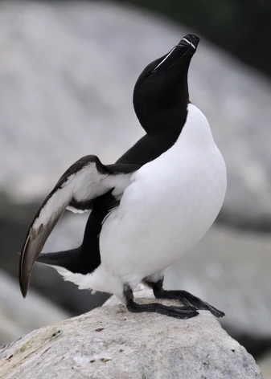

El razorbill es un ave marina del Atlántico Norte con colores blanco y negro, y una línea blanca que cruza sus ojos hacia su pico.
Pone un solo huevo al año. Forma parejas fieles a largo plazo y anida en grietas o lugares ocultos, compartiendo la incubación y alimentación de la cría entre ambos padres.
Se alimenta de peces como el lanzón, arenque y capelán. También consume crustáceos y gusanos marinos.

Se encuentran en acantilados costeros, en grietas rocosas, repisas o cavidades protegidas.